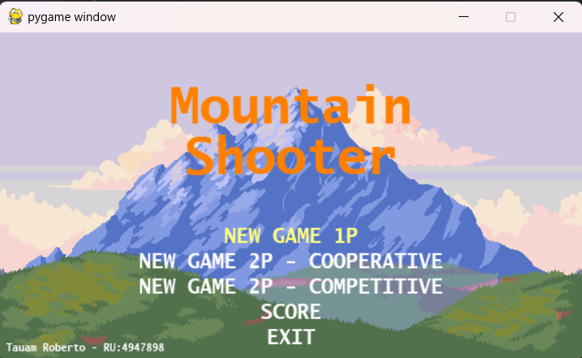
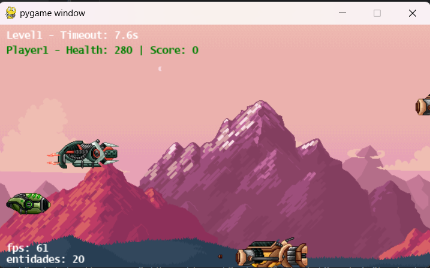
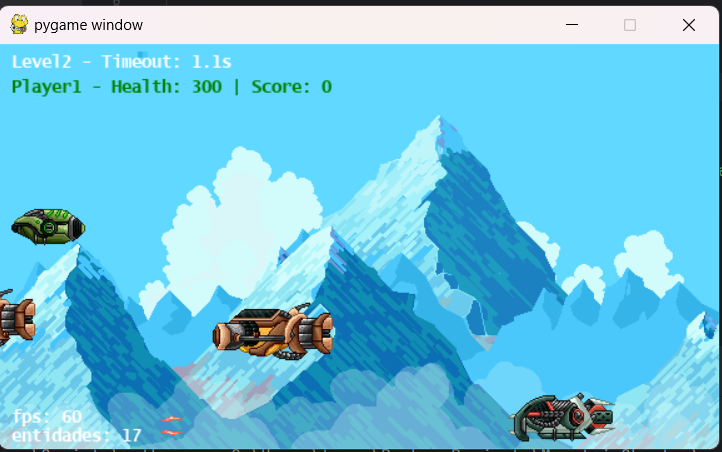
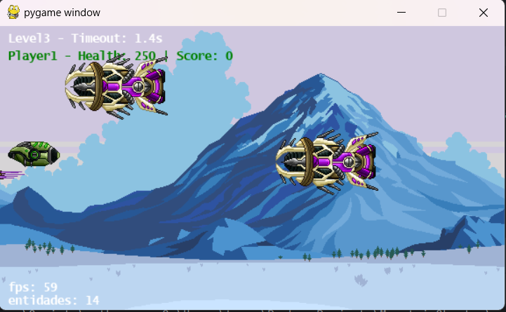
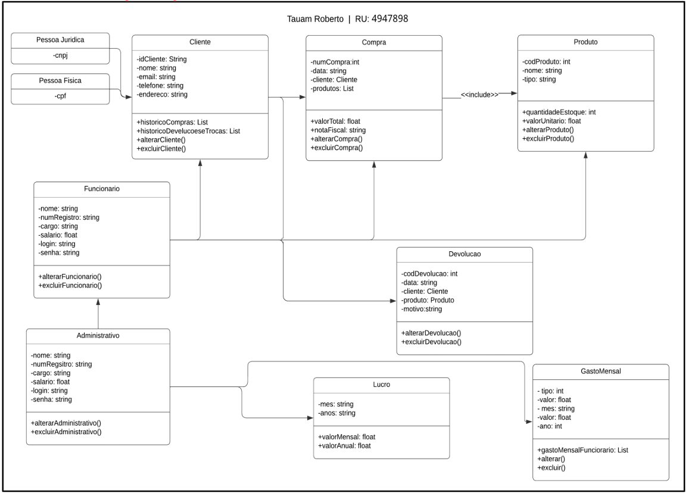

Portifólio
Nesta página, você verá dois dos meus projetos feitos na faculdade no ano de 2024, o primeiro é a implementação de uma terceira fase de jogo feito em Phython, chamado Mountain Shooter, ele é um jogo arcade 2D desenvolvido com Pygame. Tem como objetivo atirar no adversário, os niveis são delimitados por tempo e pode ser jogado por até duas pessoas.
* Jogo Mountain Shooter: MENU DO JOGO

* NIVEL 1

* NIVEL 2

* NIVEL 3

Caso você tenha interesse em conhecer mais sobre o jogo e até mesmo joga-ló, você consegue o acesso com esse link por meio do GitHub: https://github.com/RobertodoAmaral/MountainShooter.git
* Meu segundo projeto foi um diagrama de clases para coleta de requisitos funcionais do projeto de software fictício chamado AGROPETS.
